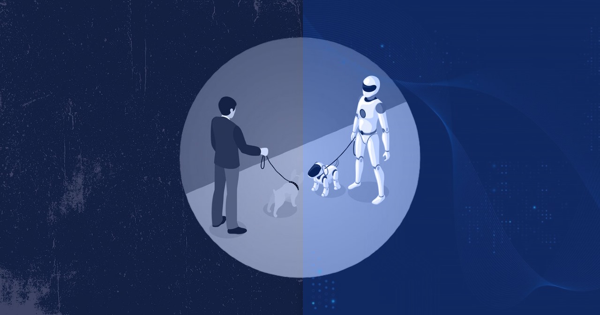

Ethical Decisions-Making in AI
Introduction - Why Do Ethics Matter in AI?
Imagine this: While playing with an AI art generator, you notice that certain types of people always appear in a certain way–like doctors and engineers are mostly men, or criminals are always portrayed as a certain race. Or you are using an AI chatbot to help you with homework, and it gives you an answer that sounds a little off. You ask it again, and this time, it gives you a totally different answer.
This happens because AI is not perfect. AI does not think the way humans do–it just follows patterns based on the data it has been trained on. Sometimes, that data can be incorrect, biased, or even harmful. AI can also be misused in ways that are unfair or unethical, leading to real-world consequences.
1. The Problem with AI: Why It’s Not Always Fair
AI is trained using data–huge amounts of text, images, and numbers collected from the internet. But here’s the issue: AI learns from humans and humans make mistakes. This means AI can also inherit human biases and spread misinformation.
Examples of Ethical Issues in AI:
- AI Bias in Hiring: Some AI hiring tools have been trained on past job applications, where men were hired more than women. As a result, the AI may unfairly reject female candidates.
- Misinformation from Chatbots: An AI Chatbots might confidently tell you a historical fact–but if it was trained on false information, it could be completely wrong.
- AI Deepfakes & Fake News: AI can create realistic-looking videos of people saying things they never actually said, which can be used to spread lies.
AI does not have morals–it just does what it’s programmed to do. That’s why humans need to make ethical choices when using AI.
2. The Dangers of Over-Reliance on AI
Have you ever let AI do all the thinking for you? Maybe you used ChatGPT to write an entire essay without double checking the facts. Or maybe you let AI recommend all your sources without double checking them.
This is called over-reliance on AI, and it’s harmful because:
- AI is not always accurate: It can generate false information, also known as “hallucinations.”
- AI does not understand context: It can misinterpret questions and give misleading answers.
- AI can reinforce bias: If AI is trained on biased data, it will repeat those biases.
Real-World Example: A student used an AI chatbot for sources on her history paper. The chatbot gave convincing but wrong sources. She didn’t double-check them and submitted the paper with those fake citations—and received a zero.
Key Point: AI should be a tool, not a replacement for human thinking. Always fact-check and use critical thinking.
3. How to Make Ethical Choices When Using AI
Since AI doesn’t have morals, it’s up to us to use it responsibly. Here’s how you can make smarter, ethical decisions when interacting with AI:
Question AI’s Responses
- Just because an AI says something does not mean it’s true. AI does not “know” things—it predicts words based on patterns.
- Cross-check AI answers with reliable sources (like textbooks or official websites).
- If AI makes a bold claim or assumption, ask for sources and evidence!
Be Mindful of AI’s Biases
- AI is trained on data from humans, which means it can reflect biases and stereotypes. For example, if you ask an AI image generator to create a “CEO,” it might only show white men—but in reality, CEOs can be any race or gender.
- Recognize when AI shows bias and challenge it.
- Look for diverse and multiple perspectives instead of trusting AI blindly.
Be Careful When Sharing AI-Generated Content
- AI can create realistic-looking images, videos, and even news articles. But just because something looks real does not mean it actually is. Spreading AI-generated content without verifying it can contribute to misinformation and harmful consequences.
- Fact-check before sharing. Look up the information on trusted news sources before reposting.
- Check for signs of AI-generated content. Does this image look distorted? Is the news coming from an unreliable or unfamiliar website?
- Think before you share. If something seems too good to be true or too shocking, it might be AI-generated misinformation.